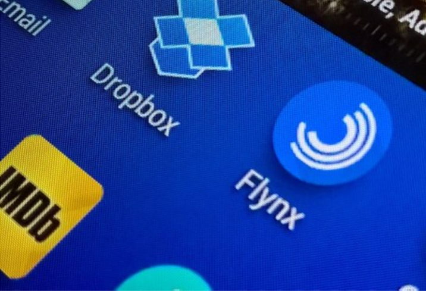

乐视网前三季度净利3.77亿元 同比增73%
网易科技 10月27日消息，乐视网（300104）发布2015年三季度报告。报告显示，乐视网前三季度实现营收837,497.43万元，同比增长76.50%；净利润为37,704.77万元，同比增长72.84%。
报告还显示，前三季度乐视网实现广告业务收入174,930.28万元，同比增长54.84%。终端业务收入403,558.44万元，同比增长101.94%。
异曲同工，MONO 2.0 最近也新增了一个类似的特性：默认下拉刷新，在下拉 hold 状态下左右滑动即可切换不同操作，从左到右依次为「玩个游戏、看个文章、刷新、看个视频、听首歌」，具体效果见下 GIF 图。
具体业务状况摘要如下：
1：截至2015年9月30日，乐视网网站的日均uv（独立访问用户）约5300万，峰值接近9000万，vv日均2.9亿，峰值3.6亿。乐视云视频开放平台CDN节点全球覆盖超过650个物理带宽总储备约10T。
2：在内容资源方面，基于“大剧看乐视”的基础上，在自制、体育、综艺等多个重要垂直领域布局。公司采取电视剧、电影、综艺、动漫、音乐等全方位内容品类的覆盖，外部采购、内部自制创作相结合的策略，报告期内，《小时代4-灵魂尽头》、《何以笙箫默》、《九层妖塔》，乐视体育独家版权赛事直播等实现了日均UV增长。在自制方面，乐视网自制综艺“版权+自制”双管齐下，报告期内推出的自制剧《拐个皇帝回现代》、自制综艺《十周嫁出去》等取得良好口碑和广告效益。
3：乐视TV•超级电视完成产能爬坡。2015年9月19日，超级电视单日销售38.2万台。9月24日公司推出第三代超级电视六款新品X40、X43、X50、X55、Max65、Max70。
